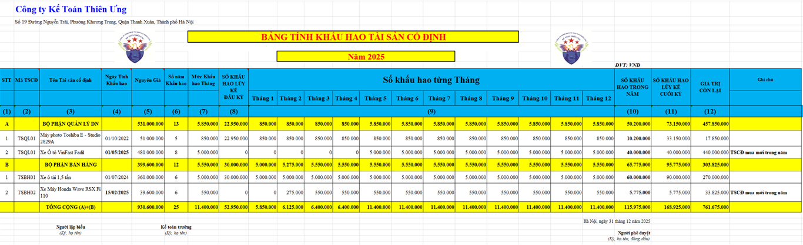
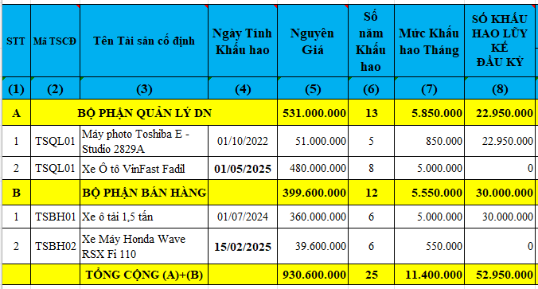
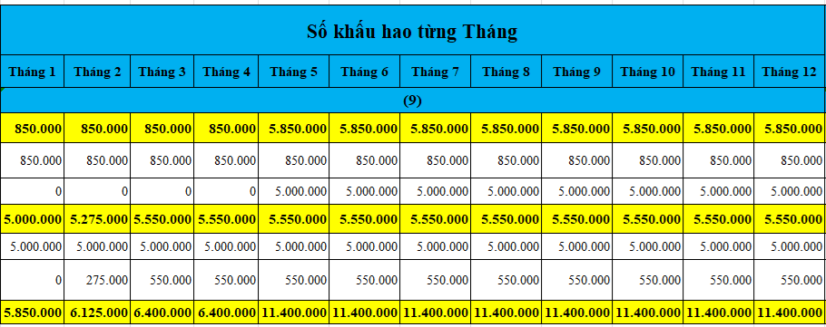

Hướng dẫn cách lập bảng trích tính khấu hao tài sản cố định hàng tháng trên Excel

Các thông tin ban đầu cần khai báo, cần có trên bảng tính khấu hao TSCĐ gồm có:
- Cột 2 – Mã TS: Là ký hiệu của TSCĐ được đặt để phân biệt thuận tiện cho việc theo dõi quản lý.
Ví dụ: Máy photocoppy Toshiba E - Chúng ta có thể đăt mã cho Máy photocoppy này như sau: TSQL01, trong đó:

- Cột 2 – Mã TS: Là ký hiệu của TSCĐ được đặt để phân biệt thuận tiện cho việc theo dõi quản lý.
Ví dụ: Máy photocoppy Toshiba E - Chúng ta có thể đăt mã cho Máy photocoppy này như sau: TSQL01, trong đó:
TS: là viết tắt của Tài sản Cố định
QL: là Bộ phận sử dụng TSCĐ: Máy photocoppy được sử dụng cho Bộ phận văn phòng thuộc Bộ phận Quản lý Doanh nghiệp.
01: là số thứ tự TSCĐ ghi tăng trong quá trình doanh nghiệp đi vào hoạt động sản xuất kinh doanh – Theo dõi chi tiết cho từng bộ phận
QL: là Bộ phận sử dụng TSCĐ: Máy photocoppy được sử dụng cho Bộ phận văn phòng thuộc Bộ phận Quản lý Doanh nghiệp.
01: là số thứ tự TSCĐ ghi tăng trong quá trình doanh nghiệp đi vào hoạt động sản xuất kinh doanh – Theo dõi chi tiết cho từng bộ phận
- Cột 3 – Tên tài sản: các bạn ghi tên của Tài sản được đưa vào trích khấu hao: Căn cứ vào tên gọi trên Hóa đơn mua TSCĐ hoặc hợp đồng kinh tế, hoặc thẻ tài sản cố định:
Theo khoản 9 Điều 9 Thông tư số 45/2013/TT-BTC thì:
9. Việc trích hoặc thôi trích khấu hao TSCĐ được thực hiện bắt đầu từ ngày (theo số ngày của tháng) mà TSCĐ tăng hoặc giảm. Doanh nghiệp thực hiện hạch toán tăng, giảm TSCĐ theo quy định hiện hành về chế độ kế toán doanh nghiệp.
- Cột 5 - Nguyên giá: ghi nguyên giá của TSCĐ: lấy từ Thẻ TSCĐ hoặc Biên bản giao nhận TSCĐ cho Bộ phận sử dụng (mẫu 01-TSCĐ)
Chi tiết về cách xác định nguyên giá TSCĐ thì các bạn xem tại đây:
Cách xác định nguyên giá Tài sản cố định
- Cột 6 - Số năm khấu hao: là thời gian khấu hao của TSCĐ Cách xác định nguyên giá Tài sản cố định
* Đối với tài sản cố định còn mới (chưa qua sử dụng), doanh nghiệp phải căn cứ vào khung thời gian trích khấu hao tài sản cố định quy định tại Phụ lục 1 ban hành kèm theo Thông tư 45/2013/TT-BTC để xác định thời gian trích khấu hao của tài sản cố định.
* Đối với tài sản cố định đã qua sử dụng, thời gian trích khấu hao của tài sản cố định được xác định như sau:
Trong đó: Giá trị hợp lý của TSCĐ là giá mua hoặc trao đổi thực tế (trong trường hợp mua bán, trao đổi), giá trị còn lại của TSCĐ hoặc giá trị theo đánh giá của tổ chức có chức năng thẩm định giá (trong trường hợp được cho, được biếu, được tặng, được cấp, được điều chuyển đến ) và các trường hợp khác.
|
Thời gian trích khấu hao của TSCĐ |
= |
Giá trị hợp lý của TSCĐ --------------------- Giá bán của TSCĐ cùng loại mới 100% (hoặc của TSCĐ tương đương trên thị trường) |
X |
Thời gian trích khấu hao của TSCĐ mới cùng loại xác định theo Phụ lục 1 (ban hành kèm theo Thông tư 45) |
Trong đó: Giá trị hợp lý của TSCĐ là giá mua hoặc trao đổi thực tế (trong trường hợp mua bán, trao đổi), giá trị còn lại của TSCĐ hoặc giá trị theo đánh giá của tổ chức có chức năng thẩm định giá (trong trường hợp được cho, được biếu, được tặng, được cấp, được điều chuyển đến ) và các trường hợp khác.
- Cột 7 - Mức khấu hao tháng: Là mức khấu hao TSCĐ của 1 tháng
Mức khấu hao tháng = Nguyên giá/ số năm khấu hao/12 tháng
- Cột 8 - Số khấu hao luỹ kế đầu năm: là số khấu hao luỹ kế tính đến cuối năm trên Bảng tính khấu hao TSCĐ năm trước liền kề
Trường hợp TSCĐ mới phát sinh ở năm nay thì Cột Số khấu hao luỹ kế đầu năm sẽ để bằng 0 (hoặc bỏ trống).
- Cột 9: Số khấu hao từng Tháng

Mức trích khấu hao TSCĐ từng tháng được xác định như sau:
* Đối với các TSCĐ đã được tính khấu hao từ các tháng trước (so với tháng đang thực hiện tính khấu hao) thì:
Số khấu hao tháng này = Mức khấu hao tháng (cột 7)
* Đối với các TSCĐ tăng mới trong tháng thì cách tính khấu hao TSCĐ được xác định như sau:
- Đối với tháng đầu tiên ghi tăng TSCĐ (tháng bắt đầu trích khấu hao đối với TSCĐ đó):
+ Trường hợp 1: Ngày phát sinh tăng TSCĐ (ngày đưa TSCĐ vào sử dụng -> ghi Nợ 211) là ngày đầu tháng (tức là ngày mồng 1 của tháng)
Thì Mức khấu hao của tháng đầu tiên = Mức khấu hao tháng (cột 7)
+ Trường hợp 2: Ngày phát sinh tăng TSCĐ không phải là ngày đầu tháng (Từ ngày mồng 2 trở đi) thì mức khấu hao của tháng đầu tiên phải tính theo số ngày sử dụng TSCĐ trong tháng.
Vì theo quy định tại khoản 9, điều 9 của Thông tư 45/2013/TT-BTC thì: Việc trích khấu hao TSCĐ được thực hiện bắt đầu từ ngày (theo số ngày của tháng) mà TSCĐ tăng.
Do đó: Cách tính số ngày khấu hao của tháng đầu tiên trong trường hợp 2 như sau:
Mức khấu hao TSCĐ của tháng đầu tiên = Mức khấu hao tháng * số ngày sử dụng TSCĐ trong tháng / số ngày trong tháng
Vì theo quy định tại khoản 9, điều 9 của Thông tư 45/2013/TT-BTC thì: Việc trích khấu hao TSCĐ được thực hiện bắt đầu từ ngày (theo số ngày của tháng) mà TSCĐ tăng.
Do đó: Cách tính số ngày khấu hao của tháng đầu tiên trong trường hợp 2 như sau:
Mức khấu hao TSCĐ của tháng đầu tiên = Mức khấu hao tháng * số ngày sử dụng TSCĐ trong tháng / số ngày trong tháng
Trong đó: Số ngày sử dụng TSCĐ trong tháng đầu tiên trích KH = Tổng số ngày của tháng đầu tiên trích KH TSCĐ – Ngày bắt đầu tính KH TSCĐ + 1
* Đối với các tháng tiếp theo (sau tháng đầu tiên) thì:
Số khấu hao tháng này = Mức khấu hao tháng (cột 7)
- Cột 10: Số khấu hao trong năm: là cộng tổng số khấu hao đã trích của các tháng trong năm.
Số khấu hao trong năm = số khấu hao của 12 tháng trong năm cột lại
Số khấu hao lũy kế của tài sản cố định: là tổng cộng số khấu hao đã trích vào chi phí sản xuất, kinh doanh qua các kỳ kinh doanh của tài sản cố định tính đến thời điểm báo cáo.
- Cột 12: Giá trị còn lại: phản ánh giá trị của TSCĐ còn được đưa vào làm chi phí ở các tháng tiếp sau.
Giá trị còn lại của TSCĐ = Nguyên giá TSCĐ - Số KH luỹ kế cuối năm